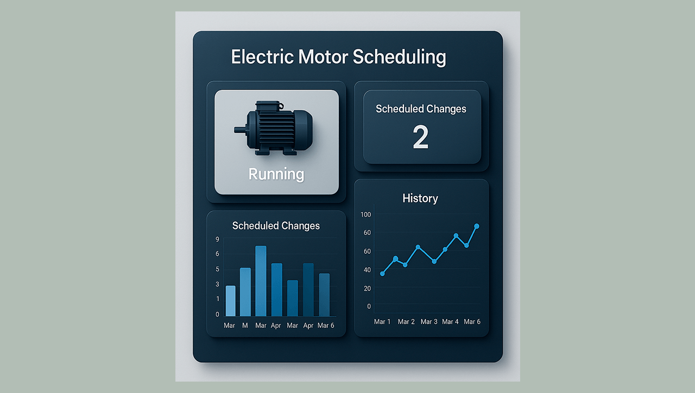
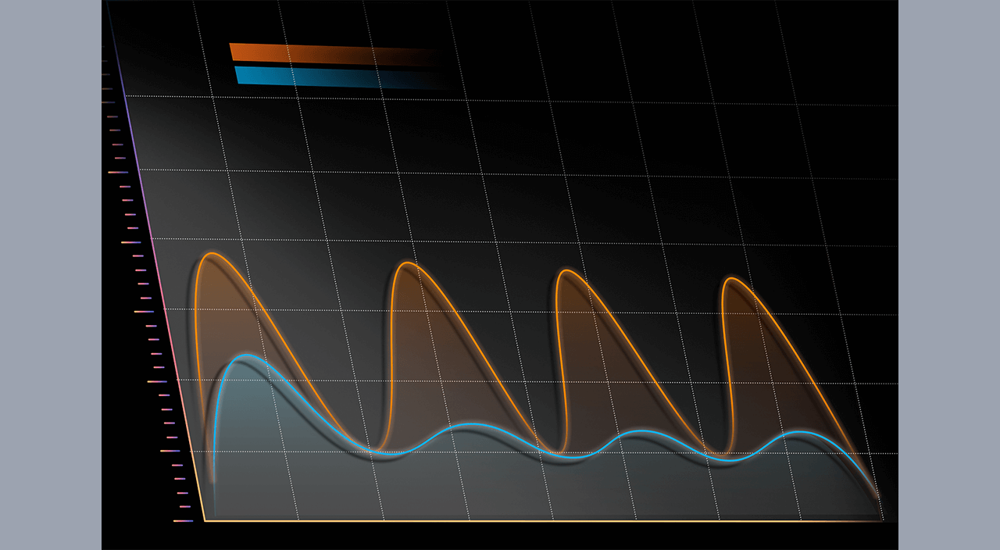
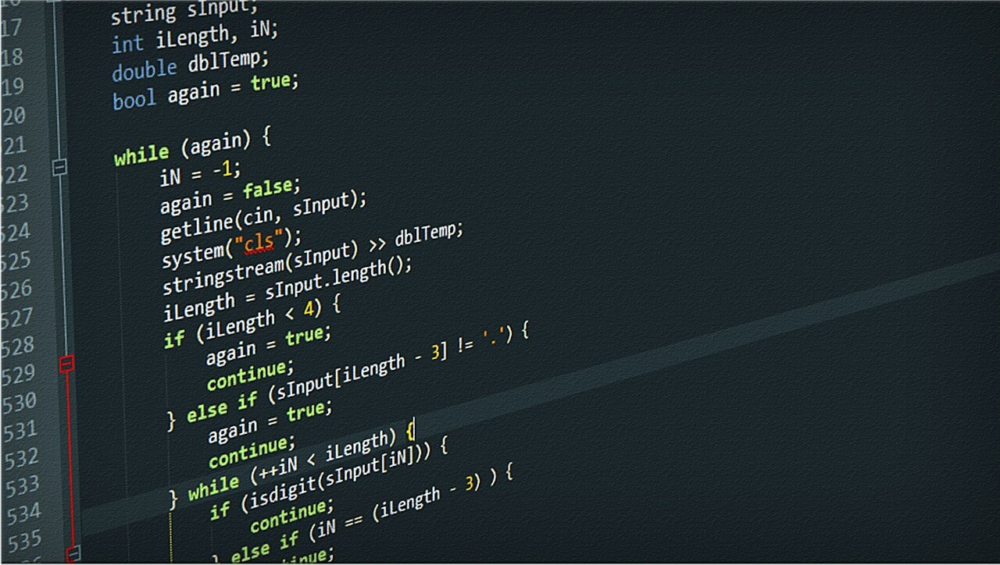
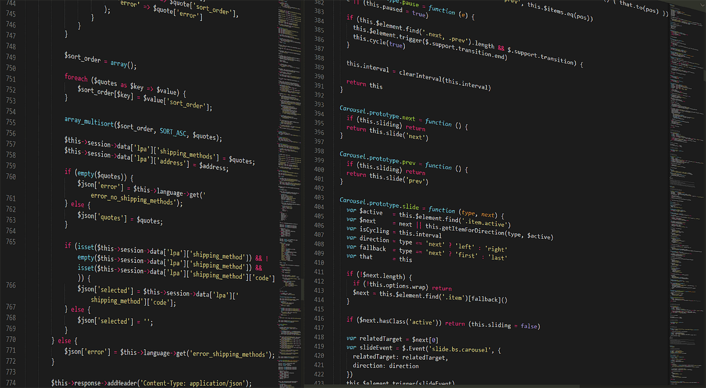
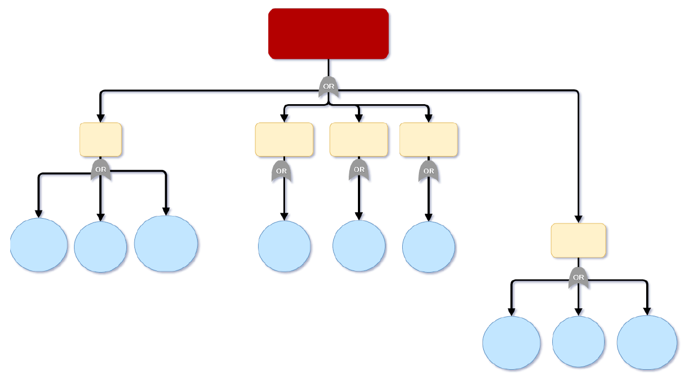
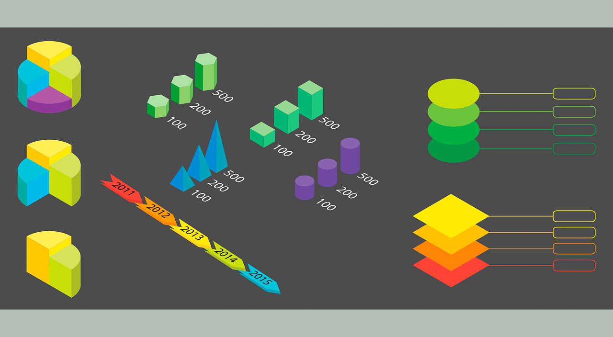
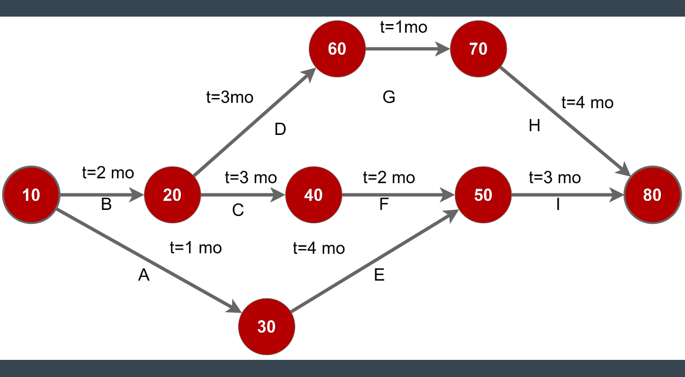
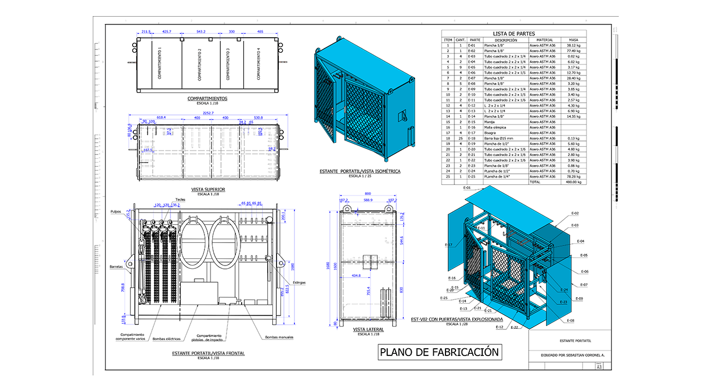
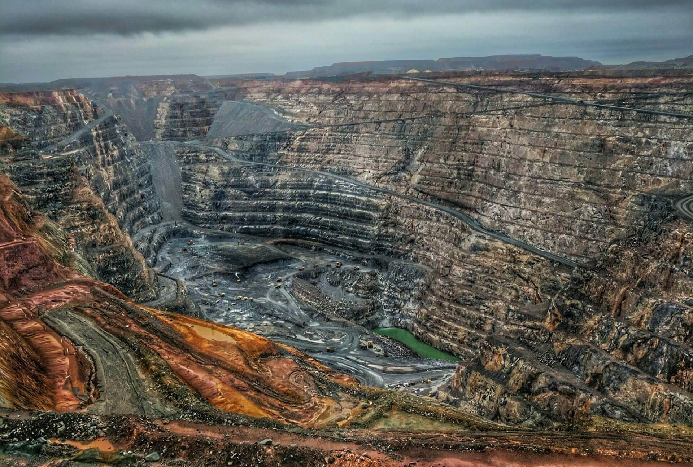

Acerca de mi
¡Hola! soy .
Bachiller en Ingeniería Mecánica (tercio superior) de la Universidad Nacional de San Agustín de Arequipa, con experiencia en mantenimiento en el sector minero. Mi enfoque está en optimizar procesos y garantizar la confiabilidad de equipos críticos mediante gestión, análisis de datos y herramientas tecnológicas avanzadas.
Un poco más de mí
Fuera del ámbito laboral, encuentro inspiración y equilibrio en actividades como el basket y la lectura, que me ayudan a descubrir nuevas perspectivas y afrontar cada desafío con actitud enfocada.
¿Cómo me distingo?
- Experiencia Integral: He aplicado herramientas de confiabilidad, metodologías de resolución de problemas y análisis estadísticos en maquinaria pesada, logrando reducir tiempos operativos y elevar los estándares de seguridad.
- Enfoque Adaptativo: Analizo cada situación para proponer soluciones a medida, utilizando software como Python, Power BI, Excel y SAP, y metodologías como Lean y Six Sigma.
- Visión Disruptiva: Combino creatividad con pensamiento analítico para anticipar y superar retos, transformando ideas en soluciones medibles y sostenibles.
- Formación Integral: Continuamente me capacito sobre mantenimiento, confiabilidad, seguridad, machine learning y ciencia de datos, para abordar los desafíos con una perspectiva integral.
¿Qué valores promuevo?
- Generar soluciones inteligentes que aseguren estándares de seguridad.
- Coordinar equipos fomentando una comunicación efectiva y un ambiente colaborativo.
- Cultivar principios de responsabilidad, innovación y compromiso en cada proyecto.
Proyectos
Categorías
Prototipo de Chatbot RAG para consulta técnica en manuales

Dashboard para programar el cambio de motores eléctricos

Modelado de la etapa actual del ciclo de vida para equipos mineros

Automatización de notificaciones de órdenes de trabajo en SAP

Carga masiva de reservas para órdenes de trabajo en SAP

Análisis del árbol de fallas en motores diesel de camión minero

Análisis del costo del ciclo de vida en equipos mineros

Optimización del Gantt de un overhaul de pala con PERT

Estructura para el desmontaje de filtros en palas y perforadoras
Habilidades
HERRAMIENTAS DE SOFTWARE
- Generación de dashboards en Power BI integrando datos históricos para respaldar decisiones estratégicas.
- Optimización del stock de repuestos mediante análisis en Excel.
- Aplicación del método PERT en MS Project y Excel para afinar cronogramas y Gantt para OVERHAUL.
- Planificación y seguimiento de proyectos con MS Project y Primavera P6, para operaciones seguras y eficientes.
- Procesamiento avanzado de avisos de fallo en MineOps mediante Excel para afinar la categorización de modos de falla.
MANTENIMIENTO Y CONFIABILIDAD
- Elaboración de programas semanales en SAP, coordinando fechas, equipos y tiempos para mantener operaciones continuas.
- Gestión integral de órdenes de trabajo, reservas de material y avisos de mantenimiento para planta concentradora y mina.
- Aplicación de la metodología AMEF, Análisis de Causa Raíz (ACR), Análisis de estadísticos con distribución Weibull, Análisis del Costo del Ciclo de Vida (ACCV) para aumentar la disponibilidad del activo.
- Actualización de Procedimientos Escritos de Trabajo Seguro (PETS) para mantener altos estándares de seguridad.
PROGRAMACIÓN Y CIENCIA DE DATOS
- Implementación de algoritmos en Python para el Análisis del Árbol de Fallas (FTA) que cuantifican la probabilidad de falla.
- Desarrollo de scripts en Visual Basic para automatizar la planificación de mantenimiento en SAP, incrementando la agilidad operativa.
- Integración de herramientas de Big Data y de modelos predictivos en Python para procesar datos históricos y optimizar la toma de decisiones en mantenimiento.
INGENIERÍA DE DISEÑO
- Simulación de esfuerzos y análisis de elementos finitos en Autodesk Inventor para validar diseños y garantizar la integridad estructural.
- Diseño de soluciones de mejora continua para procesos de mantenimiento, elevando estándares de seguridad en minería.
- Elaboración de planos 2D y modelos 3D con SolidWorks, AutoCAD e Inventor que respaldan procesos productivos y optimizan intervenciones.

Contacto
Descubra cómo mi experiencia puede contribuir al crecimiento de su compañía.